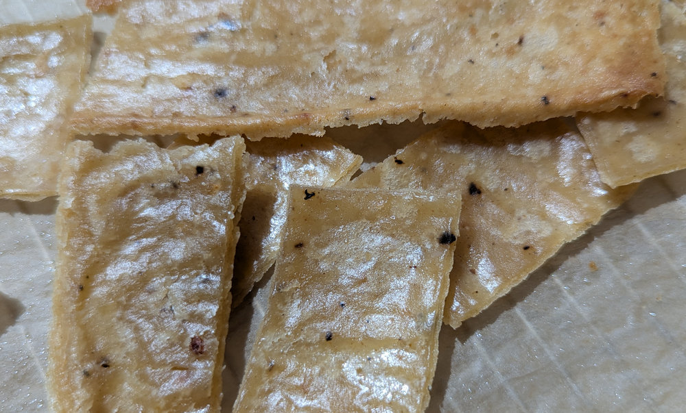

Sourdough Discard Crackers
 Vegetarian/Vegan
Vegetarian/Vegan
Thin, crispy crackers with a tangy sourdough flavour

Crackers
200gsourdough discard (stirred down)28gbutter, melted1/4 tspfine sea salt2 tspdried herbs (Herbs de Provence)1/4 tspsalt, for sprinkling on top- OR
1/2 tsppaprika1 tsponion powder1 tspgarlic powder1/2 tspblack pepper
Preheat oven to 325°F (160°C). Line a baking sheet with parchment paper.
Melt the butter in a mixing bowl on low power in the microwave and let it cool slightly.
Add the sourdough discard, dried herbs (or spices) and salt to the melted butter. Mix thoroughly until well combined.
Use an offset spatula to spread the mixture in a thin, even layer over the parchment paper. Sprinkle the top evenly with the finishing salt.
Bake for 10 minutes. Remove from oven and score into squares with a knife or pizza cutter. Return to the oven and bake for another 15-25 minutes until golden brown.
Check at the 20 minute mark — ovens vary and these can brown quickly. Pull them as soon as they’re golden to avoid burning.
Remove from oven and cool completely before breaking into pieces.
Store in an airtight container at room temperature for up to one week.
The discard can be used cold straight from the fridge or at room temperature.
Scoring is optional — you can skip it and just break the sheet apart after baking.